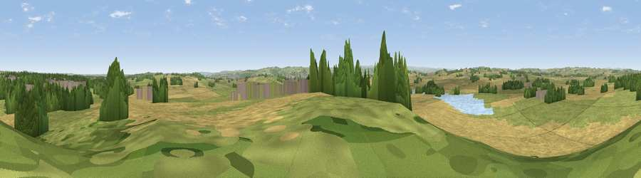

Viewpoint near Stamfordham
#19199 in England · top 45% of its area beats it · near StamfordhamThe view, rendered

A 360° render of this exact spot computed from the terrain model, tree cover and land cover — summer colours, afternoon light, calibrated against photographs of famous viewpoints. Real trees, hedges and buildings will differ in detail.
The panorama
Grey silhouette: terrain skyline in each direction (720 bearings, Earth curvature and refraction included). Dashed green: skyline with trees (+15 m) and buildings (+8 m) as obstacles. Blue strip: how far the ground is visible on each bearing.
Where the view opens
Wedge length = distance to the farthest visible ground on that bearing (vegetation-aware). Rings at 10, 25 and 50 km.
What fills the view
46% cropland · 39% grassland · 9% woodland · 3% water · 3% built-up
Angular shares of the visible panorama (visual magnitude), not map area. Landscape diversity 0.50 (0–1 Shannon).
Key numbers
More beautiful places nearby
The staircase of upgrades: each row has a higher view potential than everything closer. Driving times are estimates from straight-line distance, calibrated against real road routing — check an actual route before setting out.
| Place | Direction | Drive | Score |
|---|---|---|---|
| Viewpoint near Ovingham | SSE · 3 km | ~7 min | 59.9 |
| Whittington Hill | SW · 5 km | ~10 min | 61.3 |
| Viewpoint near High Mickley | S · 7 km | ~14 min | 66.5 |
| Viewpoint near High Mickley | S · 7 km | ~15 min | 68.3 |
| Viewpoint near Greenside | SSE · 9 km | ~18 min | 74.2 |
| Viewpoint near Burnopfield | SE · 16 km | ~28 min | 75.4 |
| Pontop Pike | SSE · 17 km | ~30 min | 77.8 |
| Viewpoint near Rothbury | N · 30 km | ~47 min | 81.1 |
55.01257, -1.88152 · source: screening · position refined by local search. Computed location — check access rights before visiting.